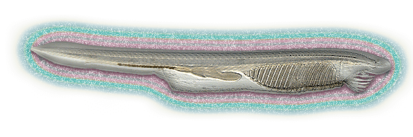

Era of Amphioxus

My stepping stone into scientific world and learning methodlogies began with this little worm. The amphioxus.
The Amphioxus is an animal that is closely related to the Vertebrates, a group comprising of fish, amphibians,
reptiles, birds, and mammals. The Amphioxus is a close descendant of the last common ancestor to all the Vertebrates,
which lived about 500 million years ago (MYA). We can use the Amphioxus as a portal to 500 MYA to understand ancient
populations of vertebrate ancestors that ended up developing unique features such as adaptive immunity, complex
nervous systems, endocrine signaling, and many other unique features.
My introduction to these animals by Agnieszka Czopik has led to the development many interesting projects and ideas
centered around this model organism. Here is what I've worked on:
◉ Attempting to create immortal cells lines of Amphioxus tissue using cloning and transfection methods.
◉ Finding a form of ancient adaptive immunity. [VCBPs]
◉ Husbandry and breeding protocols for the Amphioxus.
◉ Exploring why they produce GFP in their tentacles and eyespot area. (And I took the GFP gene from their genome, which
resides in a freezer somewhere).
◉ Developing a tool to explore the locations of ancient Chordates through time and space on Earth by tracing coastlines.
If you would like more information, feel free to contact me.
[contact]
In this two year process I've learned how science works, to intamately probe the internet for what you need, how to work as a team,
science communication, and many technical methodologies (Go to Scientific Repertoire). I also enjoy mentoring students
in science and about graduate school.